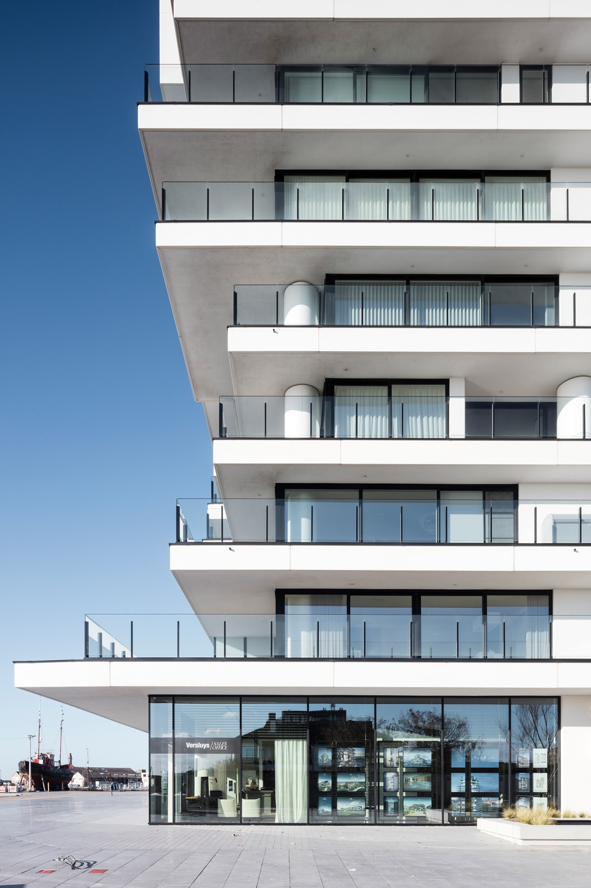
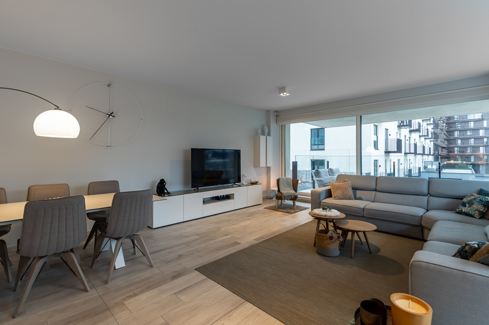
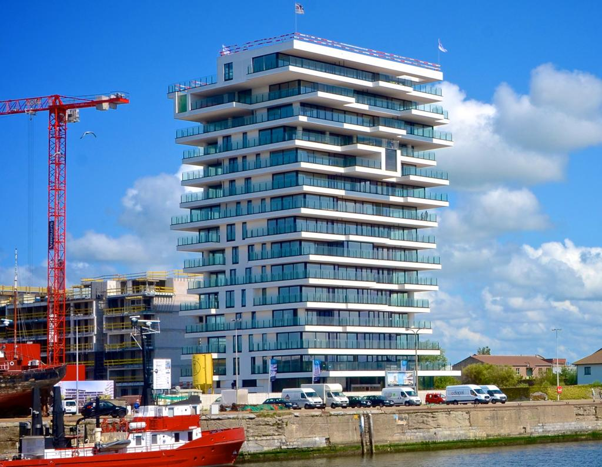

Baelskaai 12
Ostend, Belgium - 2025
Baelskaai 12 stands as a striking example of contemporary waterfront living in Ostend, where architecture, landscape, and maritime heritage converge. Situated along the redeveloped docklands of the Oosteroever district, the project reflects a careful balance between modern design and the historical character of the harbor. Its clean lines, expansive glazing, and rhythmic façade create a sense of openness, allowing natural light to flood the interiors while offering uninterrupted views of the North Sea and surrounding marina.
The building’s orientation and spatial organization are thoughtfully conceived to maximize both privacy and connection to the outdoors. Generous terraces extend the living spaces, encouraging residents to engage with the coastal environment and shifting light conditions throughout the day. Materials such as concrete, glass, and metal are used with restraint and precision, contributing to a refined yet durable aesthetic suited to the maritime climate.
Beyond its architectural qualities, Baelskaai 12 plays a role in the broader urban transformation of Oosteroever, a former industrial zone now reimagined as a vibrant residential and cultural neighborhood. Pedestrian-friendly pathways, proximity to local amenities, and integration with public spaces foster a strong sense of community while maintaining a tranquil atmosphere. The development exemplifies a forward-thinking approach to coastal urbanism, where sustainability, livability, and design excellence intersect.



